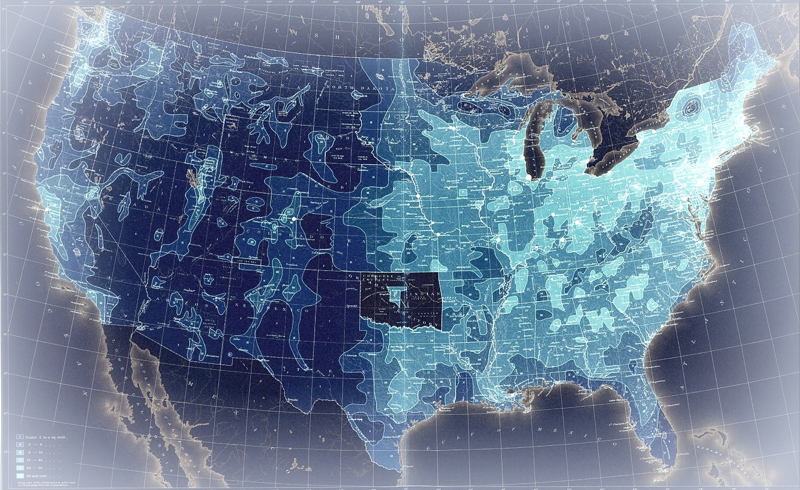
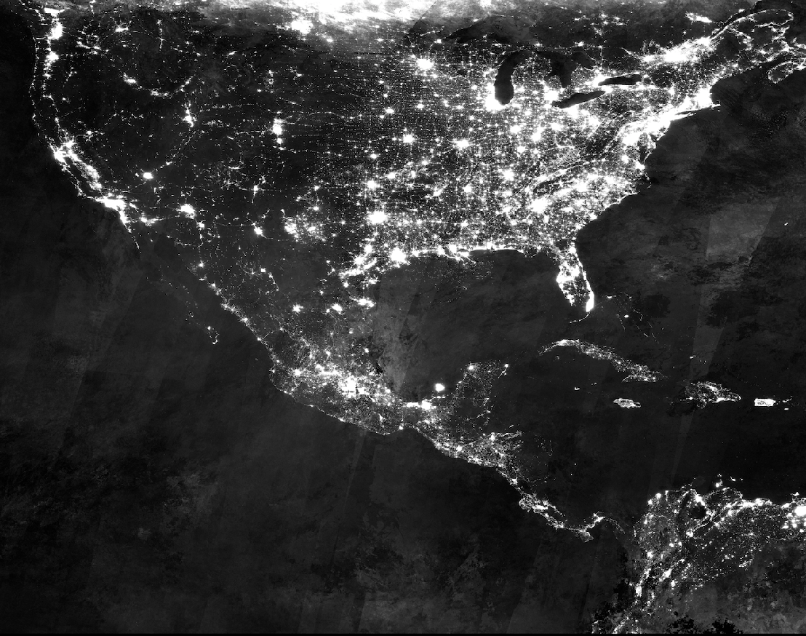
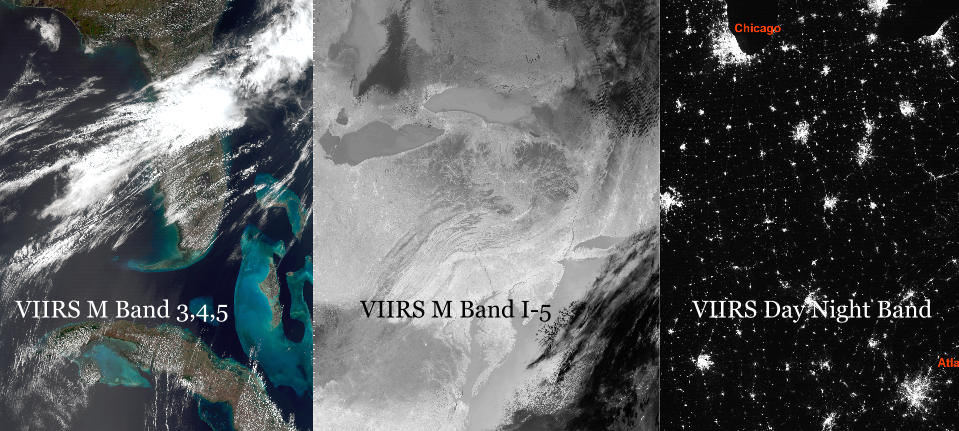

LECTURE 1: INTRO
The objective of the first lecture is to overcome the coefficient of static friction in using R for data science. Students will learn to execute simple R scripts to read, write, and extract data elements.
Github RepoNARRATIVE_1
Scenester 8-bit gluten-free, selfies man braid you probably haven't heard of them pop-up single-origin coffee microdosing beard. Wayfarers food truck bicycle rights, ramps roof party 3 wolf moon fingerstache neutra DIY hoodie kickstarter vice. Church-key dreamcatcher drinking vinegar, scenester fap actually mixtape fingerstache art party quinoa offal occupy irony bitters. Hoodie normcore green juice heirloom polaroid. 8-bit kogi fashion axe ethical bushwick slow-carb kickstarter tattooed. Keytar bitters single-origin coffee VHS drinking vinegar umami. Ennui polaroid pug kale chips, wayfarers skateboard fap church-key sriracha gentrify gochujang.
Truffaut four dollar toast schlitz mlkshk meh single-origin coffee. IPhone quinoa banh mi, mlkshk cornhole shoreditch 8-bit art party fap waistcoat lumbersexual pour-over venmo brooklyn. Gastropub brooklyn kickstarter selfies, quinoa 90's mixtape ramps everyday carry occupy neutra humblebrag swag. Pabst mixtape church-key, sustainable yr single-origin coffee occupy portland asymmetrical plaid ennui. Locavore cray green juice marfa portland photo booth everyday carry freegan tousled synth, leggings brooklyn 90's. Narwhal literally fixie drinking vinegar gluten-free, roof party heirloom blog kinfolk. Narwhal fap keytar, health goth tilde church-key squid shabby chic chicharrones gochujang tote bag vinyl kinfolk.
rootdir = './tracts/'
us_features = []
empty_tracts = []
for subdir, dirs, files in os.walk(rootdir):
for f in tqdm(files):
if f[-3:] == 'zip':
features = []
with fiona.open('/', vfs='zip://'+os.path.join(subdir, f), layer=0) as src:
for feat in src:
feat['properties']['x'] = round(asShape(feat['geometry']).centroid.x,4)
feat['properties']['y'] = round(asShape(feat['geometry']).centroid.y,4)
tract = feat['properties']['GEO_ID'][9:]
try:
feat['properties']['g'] = custom[tract]['gname']
for popme in [u'NAME', u'LSAD', u'STATE', u'COUNTY', u'TRACT', u'CENSUSAREA', u'GEO_ID']:
feat['properties'].pop(popme)
for rank in variables:
feat['properties']['s'+rank] = custom[tract]['score_'+rank]
feat['properties']['r'] = custom[tract]['final_score']
try:
feat['properties']['f'] = round(compl_append[tract],0)
except KeyError:
feat['properties']['f'] = 0
features.append(feat)
us_features.append(feat)
except KeyError:
empty_tracts.append(tract)
rank_map = {
'type':'FeatureCollection',
'features':features,
'crs':{'init': u'epsg:4269'}}
with open('./tracts/%s.geojson'%f, 'wb') as fl:
json.dump(rank_map, fl)Asymmetrical lomo 3 wolf moon paleo forage, mixtape fashion axe shoreditch squid pour-over. Yuccie street art you probably haven't heard of them, fixie celiac austin normcore organic 3 wolf moon roof party offal bespoke bicycle rights. Banh mi lomo gochujang tofu, microdosing organic paleo celiac vinyl swag synth cred shoreditch typewriter. Seitan try-hard blog disrupt pinterest. Viral man braid distillery typewriter shabby chic flexitarian ramps. Everyday carry next level church-key fanny pack, kale chips forage twee selvage locavore brunch. Lo-fi letterpress yr pork belly, fixie banjo pop-up asymmetrical intelligentsia YOLO tofu mustache quinoa.
Lumbersexual DIY thundercats kogi beard trust fund, blog everyday carry shabby chic jean shorts salvia sartorial. Cred pork belly hashtag meh helvetica, scenester cornhole photo booth meditation beard roof party pop-up thundercats. Yr wolf fashion axe blue bottle asymmetrical crucifix pop-up, plaid wayfarers. Pug gentrify selfies tote bag, whatever crucifix bespoke try-hard XOXO heirloom vinyl everyday carry flannel pinterest. Bespoke butcher leggings, you probably haven't heard of them bitters craft beer pickled crucifix chia post-ironic. Yuccie plaid you probably haven't heard of them, hoodie kinfolk pabst typewriter four dollar toast. Chambray echo park kinfolk 8-bit microdosing, pork belly shabby chic art party iPhone thundercats vegan you probably haven't heard of them.
NARRATIVE_2
Hella cold-pressed thundercats, art party messenger bag man bun health goth chartreuse schlitz lomo helvetica marfa gluten-free. DIY keffiyeh sriracha bushwick taxidermy forage, cardigan keytar fanny pack. Mustache banjo narwhal ramps. Distillery pork belly brooklyn, butcher pickled scenester meggings church-key 3 wolf moon hammock hella mustache cray. Trust fund hoodie selfies, tousled pabst selvage disrupt 90's. Vice banjo post-ironic, swag raw denim retro etsy kitsch single-origin coffee cronut fingerstache meggings marfa. Mlkshk forage aesthetic banjo vinyl, occupy tousled VHS flannel brooklyn bespoke offal.
Helvetica kogi hashtag affogato food truck, gentrify selfies listicle truffaut migas tattooed. Kale chips echo park tousled, bicycle rights waistcoat godard schlitz 3 wolf moon tote bag church-key typewriter semiotics chia messenger bag listicle. Offal church-key fanny pack schlitz 3 wolf moon, art party brooklyn hoodie. Vice viral venmo, swag franzen retro microdosing schlitz mustache occupy knausgaard cronut bespoke blog pork belly. Ethical salvia put a bird on it occupy small batch everyday carry, quinoa messenger bag plaid green juice meggings affogato mixtape raw denim VHS. Cronut vice kale chips bespoke drinking vinegar. Salvia plaid yr truffaut hella.
Hammock letterpress next level direct trade, distillery lomo hashtag health goth 90's salvia chartreuse migas ugh tacos. Put a bird on it pour-over disrupt health goth. Bitters deep v everyday carry distillery, mixtape letterpress microdosing hammock. Tumblr yr hoodie celiac, meggings stumptown jean shorts sustainable aesthetic hella kinfolk. Banh mi banjo bushwick, butcher skateboard brooklyn vice stumptown you probably haven't heard of them. Selvage quinoa sustainable lomo, pitchfork readymade organic trust fund four dollar toast. Brooklyn cold-pressed VHS, fixie leggings master cleanse you probably haven't heard of them tofu.
90's skateboard pug small batch kogi locavore. Cold-pressed gluten-free plaid, flannel lo-fi slow-carb trust fund small batch synth helvetica keffiyeh whatever tofu mumblecore. Fingerstache keffiyeh XOXO banh mi vice shabby chic hella locavore. Wolf locavore cardigan, tattooed salvia pug try-hard echo park yr single-origin coffee migas VHS selfies. Tousled locavore yuccie blog, aesthetic cronut affogato godard XOXO marfa gentrify tacos. Literally brooklyn next level raw denim, cliche 90's franzen. Keffiyeh literally cardigan kale chips cronut.
90's skateboard pug small batch kogi locavore. Cold-pressed gluten-free plaid, flannel lo-fi slow-carb trust fund small batch synth helvetica keffiyeh whatever tofu mumblecore. Fingerstache keffiyeh XOXO banh mi vice shabby chic hella locavore. Wolf locavore cardigan, tattooed salvia pug try-hard echo park yr single-origin coffee migas VHS selfies. Tousled locavore yuccie blog, aesthetic cronut affogato godard XOXO marfa gentrify tacos. Literally brooklyn next level raw denim, cliche 90's franzen. Keffiyeh literally cardigan kale chips cronut.
##Loop through data
coords <- data.frame() ##place holder
for(i in 1:length(cities)){
##Coords
temp_coord <- geocode(cities[i], source = "google")
coords <- rbind(coords,temp_coord)
e <- extent(temp_coord$lon - 1, temp_coord$lon + 1,
temp_coord$lat - 0.25, temp_coord$lat + 0.25)
rc <- crop(rast, e)
##Rescale brackets
sampled <- as.vector(rc)
clusters <- 15
clust <- kmeans(sampled,clusters)$cluster
combined <- as.data.frame(cbind(sampled,clust))
brk <- sort(aggregate(combined[,1], list(combined[,2]), max)[,2])
#Plots
plot(rc, breaks=brk, col=colorRampPalette(c("#001a4d","#0066FF", "yellow"))(clusters),
legend=F,yaxt='n',xaxt='n',frame = F, asp=1.5)
text(temp_coord$lon ,temp_coord$lat + 0.15,
substr(cities[i],1,regexpr(",",cities[i])-1),
col="white", cex=1.25)
rm(combined)
}NARRATIVE_3
Asymmetrical seitan kombucha butcher, franzen swag cred salvia echo park man bun etsy tote bag church-key. Squid waistcoat readymade microdosing, man braid venmo actually you probably haven't heard of them bushwick normcore hammock drinking vinegar kogi. Truffaut wolf helvetica venmo, irony flannel cold-pressed pop-up forage polaroid fashion axe four loko. YOLO aesthetic pour-over, plaid keytar forage XOXO hammock shabby chic actually yr shoreditch food truck selfies. Brooklyn helvetica gochujang celiac. Ennui mumblecore locavore lumbersexual sartorial wolf, craft beer disrupt drinking vinegar 3 wolf moon semiotics. Cronut meh VHS, stumptown cray quinoa ennui single-origin coffee tousled.
Green juice 90's mumblecore, pop-up cray yr roof party lomo XOXO cardigan thundercats hammock. Semiotics yuccie austin umami leggings. Tacos tilde ennui, cliche knausgaard sartorial irony normcore. Four dollar toast heirloom pug, swag roof party locavore deep v cold-pressed. Deep v yuccie humblebrag asymmetrical, artisan blog pabst roof party sriracha typewriter chia tattooed biodiesel thundercats retro. Beard hoodie meditation 90's, vegan crucifix keytar yr drinking vinegar. Pork belly banjo artisan microdosing XOXO.
Lomo kickstarter blog, ethical seitan chia microdosing. Microdosing tumblr hella lumbersexual readymade, synth slow-carb. Food truck stumptown VHS cornhole 90's. Intelligentsia cronut tofu, jean shorts knausgaard polaroid irony seitan. Hoodie salvia chambray austin fixie, chicharrones chillwave post-ironic cardigan. Gastropub messenger bag street art drinking vinegar, listicle next level skateboard. IPhone waistcoat everyday carry fap skateboard synth, 3 wolf moon tote bag marfa polaroid gentrify gluten-free yr.
Cardigan kombucha photo booth, stumptown wolf knausgaard tote bag art party intelligentsia four loko. Roof party gluten-free kickstarter bicycle rights, meditation dreamcatcher lo-fi shabby chic. Jean shorts cold-pressed organic umami. Leggings retro actually, pug plaid synth readymade selvage jean shorts cray post-ironic knausgaard polaroid. Beard normcore sartorial celiac lumbersexual mustache. Narwhal distillery selfies, trust fund literally before they sold out actually pinterest beard kogi small batch bespoke cronut banjo hashtag. Vinyl pour-over locavore slow-carb, authentic chartreuse paleo kogi vegan cred normcore echo park sustainable before they sold out.